| 多変量分散分析（SASによる実験データの解析：第14章） |
| 多変量分散分析（SASによる実験データの解析：第14章） |
図2.1は、薬剤の投与によってラットの肝臓量と体重がどう変化するか検証するために集められたデータ dataliverweight.csv である。
図2.2は薬剤の有無別にデータをプロットしたものである。 体重が同じであれば、薬ありの方が肝臓量は高い傾向にある。

特性 について、
について、 群の
群の 番目の観測値を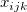とする。 このとき、通常の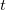検定では、検定統計量
番目の観測値を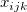とする。 このとき、通常の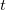検定では、検定統計量
| 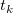 | 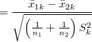 | (2.1) |
を用いる。 ただし、
| 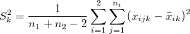 | (2.3) |
であり、特性についてプールされた群内不偏分散を表す。
ここで、
| 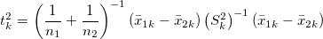 | (2.4) |
と表すこともできる。
例のように特性が2個の場合、
| 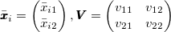 | (2.5) |
と定義する。 ただし、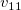と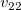はそれぞれ特性1と特性2に関するプールされた群内不偏分散（つまり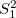と ）、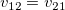は特性1と特性2に関するプールされた群内不偏共分散である。 一般には、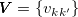で
）、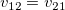は特性1と特性2に関するプールされた群内不偏共分散である。 一般には、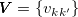で
| 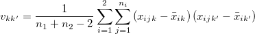 | (2.6) |
と書ける。
このとき、
| 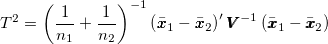 | (2.7) |
をHotellingの統計量という。
もし帰無仮説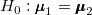が真で、観測値ベクトルが共通の群内母分散共分散行列をもつ多変量正規分布に従うなら、
| 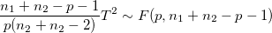 | (2.8) |
となり（ は特性の数）、
は特性の数）、 検定によってこの
検定によってこの を検定できる。
を検定できる。
Rでは、DescToolsパッケージの関数 HotellingsT2Test() によってHotellingのにもとづいた検定を行うことができる。
図2.1のデータ dataliverweight.csv で肝臓量と体重の平均が薬の有無に関わらず等しいという帰無仮説を検定するには、以下のスクリプトを実行すればよい。
> library("DescTools")
> head(data01,5)
個体 薬 肝臓量 体重
1 1 x 710 245
2 2 x 627 224
3 3 x 865 342
4 4 x 1064 403
5 5 x 736 214
> HotellingsT2Test(cbind(肝臓量, 体重)~薬, data=data01)
Hotelling's two sample T2-test
data: cbind(肝臓量, 体重) by 薬
T.2 = 41.086, df1 = 2, df2 = 17, p-value = 3.087e-07
alternative hypothesis: true location difference is not equal to c(0,0)
このアウトプットでは であるかのように表示されているが、本当は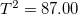であり、T.2の値は値である。 結果は、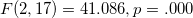と書ける。
であるかのように表示されているが、本当は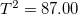であり、T.2の値は値である。 結果は、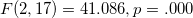と書ける。
特性が2つ以上の場合、ANOVAにおける平方和の分割を平方和積和行列の分割として以下のように拡張できる。
| 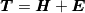 | (2.9) |
ただし、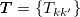は総平方和積和行列、
| 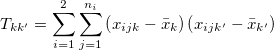 | (2.10) |
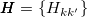は群間平方和積和行列、
| 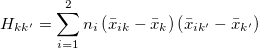 | (2.11) |
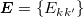は残差平方和積和行列
| 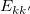 | 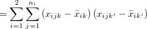 | (2.12) | ||
 |
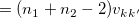 | (2.13) |
である。
平方和積和行列の対角成分には特性に関する平方和が、非対角成分には特性と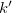の積和（共分散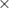自由度）が格納されている。
このとき、
| 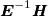 | (2.14) |
の固有値は、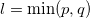個得られる1。 この固有値を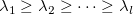とすると、検定のための統計量が4種類
| 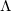 | 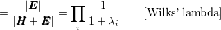 | (2.15) | ||
| 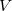 | 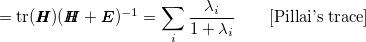 | (2.16) | ||
 |
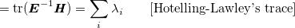 | (2.17) | ||
| 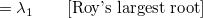 | (2.18) |
得られる。
例のように2特性2群比較だと、 であり、
であり、
| 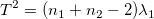 | (2.19) |
が成り立つ。
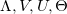はの時のみ等しい値を取り、かつ正確にの下で分布に従う。 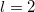のときはのみが正確。
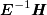の固有ベクトルを用いて、もとのデータを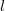個の正準変量に変換することができる。 これらを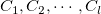とすると、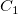は群内平方和が1、群内積和が0となるように基準化されており、かつ群間平方和が最大値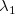を取る。 また、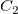はと無相関かつ群内平方和が1、群内積和が0で、群間平方和が最大値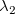を取る。 以下同様。
群間差を視覚的に把握するため、特性数が3以上、群の数が2以上の場合、正準変量を2次元平面上にプロットすることがある。 これを正準判別分析という。
Rでは、MANOVAによる分析を行うための関数 manova() が装備されている。
図2.1のデータ dataliverweight.csv で肝臓量と体重の平均が薬の有無に関わらず等しいという帰無仮説をMANOVAによって検定するには、以下のスクリプトを実行すればよい。
> fit01 <- manova(cbind(肝臓量, 体重)~薬, data=data01)
> summary(fit01, test="Wilks")
Df Wilks approx F num Df den Df Pr(>F)
薬 1 0.17142 41.086 2 17 3.087e-07 ***
Residuals 18
---
Signif. codes: 0 ‘***’ 0.001 ‘**’ 0.01 ‘*’ 0.05 ‘.’ 0.1 ‘ ’ 1
> summary(fit01, test="Pillai") # デフォルト
Df Pillai approx F num Df den Df Pr(>F)
薬 1 0.82858 41.086 2 17 3.087e-07 ***
Residuals 18
---
Signif. codes: 0 ‘***’ 0.001 ‘**’ 0.01 ‘*’ 0.05 ‘.’ 0.1 ‘ ’ 1
> summary(fit01, test="Hotelling-Lawley")
Df Hotelling-Lawley approx F num Df den Df Pr(>F)
薬 1 4.8337 41.086 2 17 3.087e-07 ***
Residuals 18
---
Signif. codes: 0 ‘***’ 0.001 ‘**’ 0.01 ‘*’ 0.05 ‘.’ 0.1 ‘ ’ 1
> summary(fit01, test="Roy")
Df Roy approx F num Df den Df Pr(>F)
薬 1 4.8337 41.086 2 17 3.087e-07 ***
Residuals 18
---
Signif. codes: 0 ‘***’ 0.001 ‘**’ 0.01 ‘*’ 0.05 ‘.’ 0.1 ‘ ’ 1
この例は2群比較であるので、 上記の例ではMANOVAで群間差が有意であったので、次に特性ごとのANOVAを行うことになる。 この場合、関数 summary.aov() に manova() の結果を渡せばよい。 この場合、MANOVAでは有意差が得られていたものが、体重と肝臓量それぞれについて検討すると、有意差なしという結果になる。 上記の例で、平方和積和行列との固有値は以下の通り。 後藤 (1973, p.212) を参照して正準変量を算出すると、以下の通り。 図2.3は薬剤の有無別に正準変量をプロットしたものである 。 メモ 後藤 (1973, p.212) では各変数から全体平均を引いたものに固有ベクトルをかけることで正準変量を求めている。 一方、「SASによる実験データの解析」図表 14.3（p.275）ではこれとメトリックが異なっているし、そもそもSASのアウトプットでは固有ベクトル（に何かを演算したもの）を用いて正準変量を算出している（図表14.2, p.272）。 この点については詳しく説明されていないのでよくわからない。 より4つの統計量いずれにもとづいても同じ結果が得られる。
> summary.aov(fit01)
Response 体重 :
Df Sum Sq Mean Sq F value Pr(>F)
薬 1 4590 4590.4 0.7883 0.3863
Residuals 18 104813 5823.0
Response 肝臓量 :
Df Sum Sq Mean Sq F value Pr(>F)
薬 1 66817 66817 3.2366 0.0888 .
Residuals 18 371599 20644
---
Signif. codes: 0 ‘***’ 0.001 ‘**’ 0.01 ‘*’ 0.05 ‘.’ 0.1 ‘ ’ 1
> summary(fit01)$SS
$薬
肝臓量 体重
肝臓量 66816.8 -17513.40
体重 -17513.4 4590.45
$Residuals
肝臓量 体重
肝臓量 371599.4 189145.9
体重 189145.9 104813.3
> summary(fit01)$Eigenvalues
[,1] [,2]
薬 4.833669 0
> # E^(-1) %*% H の固有ベクトル
> H <- summary(fit01)$SS[[1]]
> E <- summary(fit01)$SS[[2]]
> inverseE.H <- solve(E) %*% H
> eigen.v <- eigen(inverseE.H)$vectors
>
> c.v <- cbind(scale(data01$肝臓量, scale=F), scale(data01$体重, scale=F)) %*%
+ eigen.v # 正準変量
> colnames(c.v) <- c("c1","c2")
> data02 <- cbind(data01[,1:2],c.v)
> head(data02, n=3)
個体 薬 c1 c2
1 1 x -53.79489 -70.81384
2 2 x -74.67694 -112.17194
3 3 x -65.66752 62.31613
メモここまで Figure 2.3: 群別正準変量プロット
Footnotes
| 多変量分散分析（SASによる実験データの解析：第14章） |